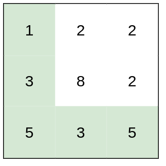
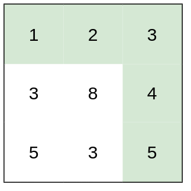
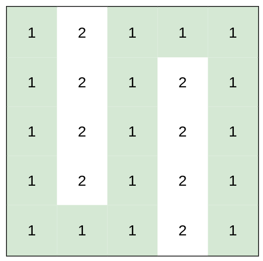

| Category | Difficulty | Likes | Dislikes |
|---|---|---|---|
| Algorithms | Medium | 6668 | 234 |
array | binary-search | depth-first-search | breadth-first-search | union-find | heap-priority-queue | matrix
google | microsoft | snowflake | facebook | nutanix | tiktok
You are a hiker preparing for an upcoming hike. You are given heights, a 2D array of size rows x columns, where heights[row][col] represents the height of cell (row, col). You are situated in the top-left cell, (0, 0), and you hope to travel to the bottom-right cell, (rows-1, columns-1) (i.e., 0-indexed). You can move up, down, left, or right, and you wish to find a route that requires the minimum effort.
A route's effort is the maximum absolute difference in heights between two consecutive cells of the route.
Return the minimum effort required to travel from the top-left cell to the bottom-right cell.
Example 1:

Input: heights = [[1,2,2],[3,8,2],[5,3,5]]
Output: 2
Explanation: The route of [1,3,5,3,5] has a maximum absolute difference of 2 in consecutive cells.
This is better than the route of [1,2,2,2,5], where the maximum absolute difference is 3.Example 2:

Input: heights = [[1,2,3],[3,8,4],[5,3,5]]
Output: 1
Explanation: The route of [1,2,3,4,5] has a maximum absolute difference of 1 in consecutive cells, which is better than route [1,3,5,3,5].Example 3:

Input: heights = [[1,2,1,1,1],[1,2,1,2,1],[1,2,1,2,1],[1,2,1,2,1],[1,1,1,2,1]]
Output: 0
Explanation: This route does not require any effort.
Constraints:
rows == heights.lengthcolumns == heights[i].length1 <= rows, columns <= 1001 <= heights[i][j] <= 106